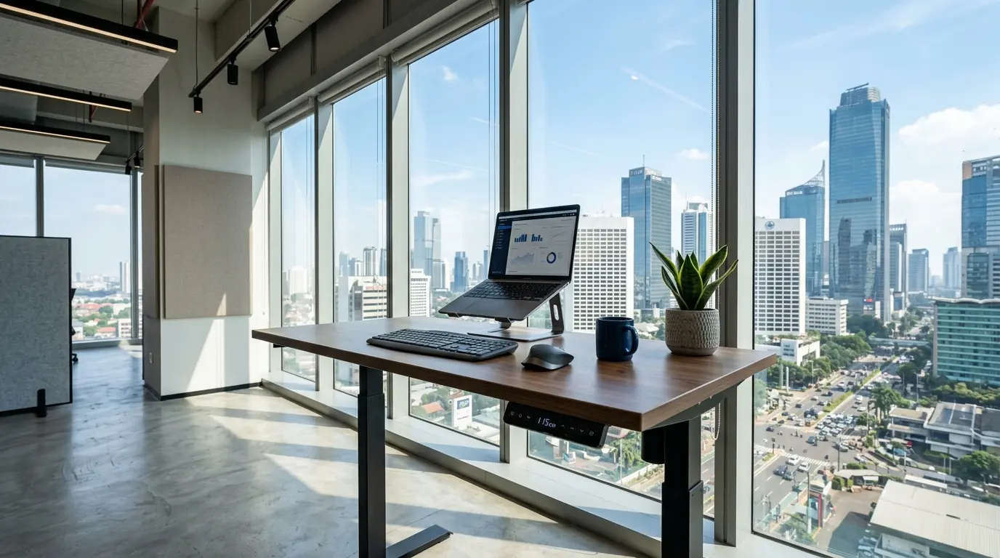

Mengapa Perusahaan Membutuhkan Layanan Jual Meja Adjustable Hidrolik di Jakarta Selatan?
Layanan jual meja adjustable hidrolik di Jakarta Selatan menjadi kebutuhan vital bagi perusahaan karena meja kerja fleksibel berbasis gas spring memampukan karyawan berganti posisi dari duduk ke berdiri secara praktis, meningkatkan energi kerja harian, serta mengurangi risiko penyakit sedentary akibat duduk terlalu lama. Berdasarkan data Jakarta Workspace Health & Ergonomics Survey 2025-2026, penerapan meja sit-stand di kawasan perkantoran Sudirman dan Kuningan mampu meningkatkan fokus dan efisiensi kerja karyawan hingga 24,6%. Laporan Indonesia Corporate Wellness Report 2025 juga mencatat bahwa 78% divisi HR mengutamakan meja hidrolik karena tidak membutuhkan instalasi kabel listrik tambahan di area lantai kerja.
Mengadopsi sarana kerja yang mendukung fleksibilitas gerak tubuh merupakan langkah proaktif dalam meningkatkan retensi dan kesehatan staf harian. Meja hidrolik menawarkan pengoperasian tuas yang sangat responsif tanpa bergantung pada aliran listrik gedung, sehingga tetap dapat disesuaikan meskipun dalam kondisi pemadaman daya. Oleh karena itu, bermitra dengan distributor resmi Perlengkapan Kantor menjadi pilihan terbaik untuk mengamankan aset furniture bergaransi sah bagi perusahaan Anda.
Berikut adalah tabel perbandingan spesifikasi teknis antara meja adjustable hidrolik dan meja adjustable elektrik:
| Parameter Evaluasi | Meja Adjustable Hidrolik (Gas Spring) | Meja Adjustable Elektrik (Motorized) |
|---|---|---|
| Konsumsi Daya Listrik | 0 Watt (Murni Mekanis Gas Spring) | 100 - 300 Watt saat Motor Beroperasi |
| Kecepatan Penyesuaian | Sangat Cepat (Sesuai Dorongan Tuas) | Konstan (Mengikuti Kecepatan Motor) |
| Ketergantungan Kabel | Bebas Kabel (Fleksibel Dipindahkan) | Wajib Terhubung ke Stop Kontak Lantai |
| Tingkat Kebisingan | Hampir Tanpa Suara (Silent Operation) | Suara Dengung Motor Elektrik |
| Bebas Risiko Korsleting | 100% Aman dari Kerusakan Elektrikal | Berisiko Jika Terjadi Gangguan Daya |
- Berganti posisi duduk dan berdiri setiap 45 menit membakar kalori ekstra hingga 20-30% dibanding duduk pasif sepanjang hari.
- Meja hidrolik tanpa kabel mempermudah konfigurasi ulang tata letak ruang kerja (layout flexibility) di ruang kerja bersama (coworking space).
- Ketinggian meja yang presisi sejajar dengan posisi siku mencegah timbulnya sindrom Carpal Tunnel pada pergelangan tangan pengetik.
Bagaimana Cara Kerja Mekanisme Gas Spring pada Meja Kerja Hidrolik?
Mekanisme gas spring pada meja kerja hidrolik bekerja dengan memanfaatkan tekanan gas nitrogen terkompresi di dalam silinder baja, yang akan mendorong atau menahan kaki meja saat tuas pelepas ditekan secara manual oleh pengguna. Tekanan gas ini menciptakan daya dorong seimbang yang memudahkan pengangkatan permukaan meja beserta komputer di atasnya tanpa membutuhkan tenaga fisik berlebih.

Meja kerja adjustable hidrolik berkualitas dari penyedia Perlengkapan Kantor dengan mekanisme tuas gas spring presisi untuk perpindahan posisi duduk-berdiri tanpa listrik.
Fitur Keunggulan Mekanis Meja Hidrolik B2B:
- Tuas Kendali Ergonomis: Dipasang di bagian bawah tepi daun meja yang sangat mudah dijangkau jari tangan saat ingin mengatur tinggi.
- Silinder Gas Nitrogen Tersegel: Komponen hidrolik berkualitas tinggi yang tahan hingga puluhan ribu kali siklus pengangkatan tanpa kebocoran tekanan.
- Rangka Kaki Teleskopik Baja: Konstruksi tiang ganda berbahan logam padat ber-cat oven yang mencegah meja goyah pada posisi tertinggi.
- Pengunci Ketinggian Otomatis: Meja secara instan terkunci kokoh pada posisi ketinggian mana pun saat tuas penyesuaian dilepaskan.
Bagaimana Langkah Mengatur Ketinggian Meja Hidrolik Secara Ergonomis?
Langkah mengatur ketinggian meja hidrolik secara ergonomis diawali dengan memegang tuas penyesuaian, menarik tuas ke atas sambil membimbing permukaan meja naik hingga setinggi siku saat berdiri, atau menekan permukaan meja ke bawah untuk posisi duduk.
Prosedur Penggunaan Posisi Kerja yang Sehat:
- Penyesuaian Posisi Duduk: Atur tinggi meja hingga siku membentuk sudut 90 derajat saat telapak kaki menapak rata di lantai dan bahu dalam keadaan rileks.
- Penyesuaian Posisi Berdiri: Naikkan meja hingga layar monitor berada sejajar dengan garis pandang mata tanpa perlu membungkukkan leher ke depan.
- Durasi Transisi Ideal: Terapkan pola berganti posisi setiap 30 hingga 45 menit sekali untuk menjaga kelancaran sirkulasi darah dan mencegah kekakuan otot.
- Distribusi Beban Permukaan: Letakkan CPU, laptop, dan monitor di bagian tengah daun meja agar tekanan hidrolik seimbang pada kedua tiang kaki.
Penuhi ketersediaan furniture kerja ergonomis di kantor Anda dengan memesan unit resmi melalui penyedia Perlengkapan Kantor yang menyediakan layanan garansi purna jual terpercaya.
- Lihat katalog lengkap workstation modern pada kategori meja kantor kami.
- Dapatkan penawaran paket hemat perlengkapan kerja pada ulasan paket standing desk dan kursi ergonomis.
- Pertimbangkan fleksibilitas ruang serbaguna lewat pilihan rekomendasi meja lipat kerja.
Faktor Apa Saja yang Memengaruhi Kerapian dan Durabilitas Meja Hidrolik Perkantoran?
Faktor yang memengaruhi kerapian dan durabilitas meja hidrolik perkantoran meliputi kapasitas daya angkut silinder (payload capacity), ketebalan papan meja berbahan HPL, keberadaan lubang manajemen kabel (cable grommet), serta kualitas pelapis baja tahan gores. Meja yang dilengkapi jalur kabel tersembunyi membantu menjaga kerapian area permukaan meja dari untaian kabel daya yang berantakan.
- Kapasitas Angkut Silinder Gas (15–40 kg): Mampu menopang beban ganda perangkat monitor, laptop, serta lampu meja tanpa penurunan tekanan mekanis.
- Daun Meja Kayu Berlapis HPL: Tahan terhadap goresan benda keras, noda cairan kopi, serta tidak mudah melengkung dalam suhu ruangan ber-AC.
- Finishing Rangka Powder Coating: Cat oven industri anti karat yang melindungi tiang baja dari kelembapan dan benturan kaki kursi.
- Sertifikasi Standar BIFMA: Memastikan seluruh sambungan mekanik telah lolos uji ketahanan siklus naik-turun ribuan kali untuk operasional korporat.
Menggunakan meja bersertifikasi standar keselamatan BIFMA menjamin ketahanan pakai untuk operasional harian. Bekerja sama dengan distributor resmi Perlengkapan Kantor memberikan kepastian pasokan barang berkualitas tinggi dengan harga grosir bersaing.
Pertanyaan Populer Seputar Jasa Jual Meja Adjustable Hidrolik (FAQ)
Kesimpulan Praktis
Memanfaatkan penawaran dari tempat jual meja adjustable hidrolik murah Jakarta Selatan merupakan keputusan investasi tepat untuk meningkatkan kenyamanan kerja, menjaga kesehatan postural karyawan, dan memaksimalkan efisiensi tata ruang kantor. Didukung oleh jaminan mutu dan pasokan terpercaya dari Perlengkapan Kantor, seluruh kebutuhan furniture bisnis Anda terjamin terpenuhi secara sempurna.
Hadirkan lingkungan kerja sit-stand yang dinamis dan sehat bagi tim Anda hari ini. Hubungi tim konsultan kami untuk survei kebutuhan, penawaran harga grosir khusus, dan layanan pengiriman tepat waktu!

Penulis: Tim Redaksi Perlengkapan Kantor
Divisi riset perancangan tata ruang dan furnitur ergonomis di Perlengkapan Kantor. Berpengalaman menangani pengadaan meja sit-stand hidrolik, workstation modular, dan solusi interior ruang kantor korporat modern. Ditinjau oleh Konsultan Ergonomi Perkantoran & Spatial Management.